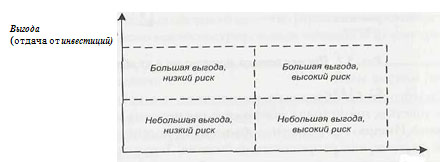

Помимо общих принципов инвестиционного анализа есть ряд важных методологических моментов, вытекающих из особенностей информационно-технологических проектов и, в частности, проектов внедрения управленческих информационных систем.
Одним из таких моментов является анализ технологической прогрессивности прикладных программ, уже имеющихся на предприятии, и их «возраста», исчисляемого от даты инсталляции или разработки. Такой анализ позволяет более адекватно оценить преимущества, которые получит предприятие от внедрения новой системы. Интуитивно понятно, что внедрение прогрессивного программного обеспечения (например, полнофункциональной ERP-системы, интегрированной в реальном времени) должно принести ощутимую пользу любой компании. В то же время польза от внедрения устаревшей или недостаточно развитой системы, имеющей ограниченные функциональные возможности, будет совсем не столь очевидной.
Анализ имеющихся систем по их возрастам требует знания приблизительных дат их инсталляции, а также оценки этих систем в количественном выражении (или в процентах от всего используемого программного обеспечения). Такой анализ позволяет более обоснованно определить стратегию замены устаревших программных средств, включая оценку способов замены, новыми собственными разработками или путем закупок у внешних разработчиков.
После анализа статуса существующих систем следует перейти к оценке приоритетов отдельных задач, исходя из реальных и перспективных потребностей бизнеса. Такой анализ, с одной стороны, должен основываться на оценке предполагаемых выгод, а с другой — на оценке реалистичности нового внедрения и связанных с ним рисков. Это особенно важно для ERP-систем, поскольку системы этого класса довольно существенно отличаются друг от друга по степени риска, затратам и срокам внедрения.
По ожидаемым выгодам и степени риска системы могут быть подразделены на четыре категории:
Классификация систем по ожидаемым выгодам и рискам довольно наглядно может быть представлена графически, при помощи системы координат, одна из осей которой характеризует уровень экономической отдачи, а другая - уровень риска (рис. 1). В этом случае для каждой системы уровни ожидаемой выгоды и риска оцениваются в некоторых абстрактных баллах (например, от нуля до десяти), после чего система позиционируется в виде точки в описанной системе координат.
 |